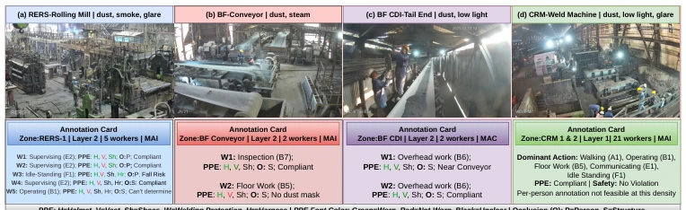
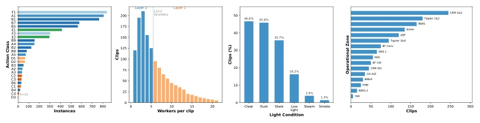
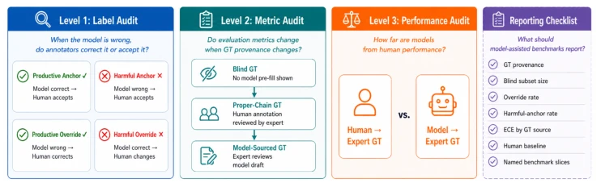
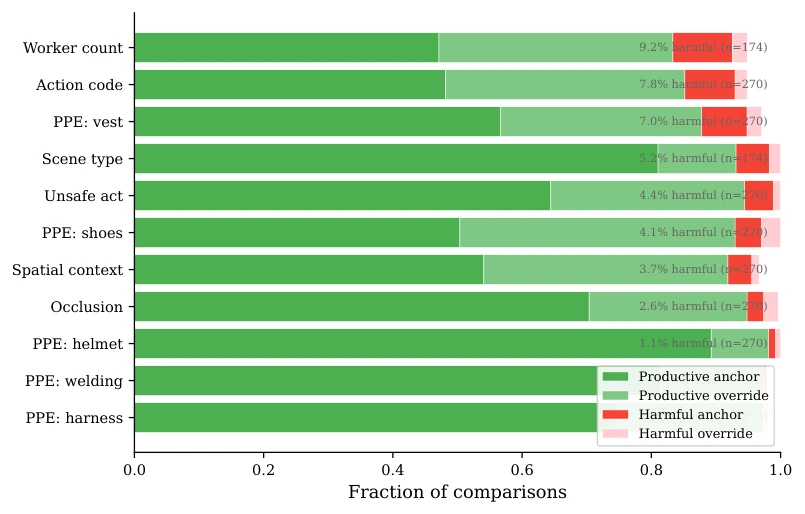
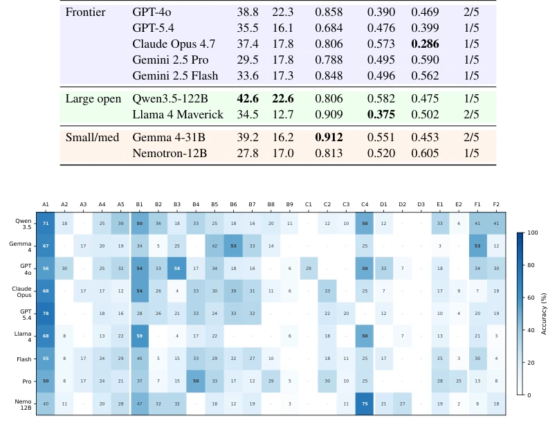
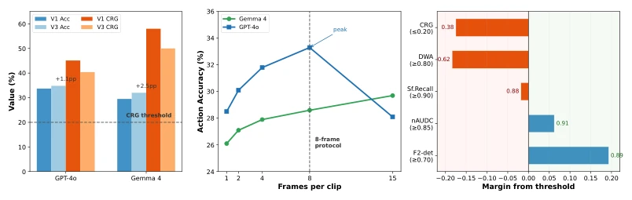
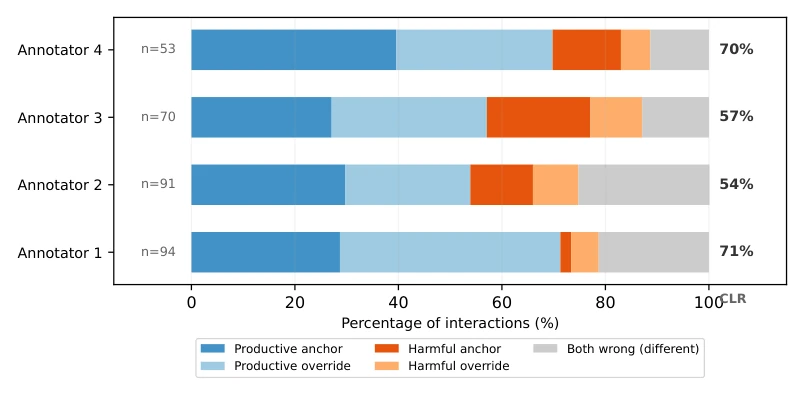
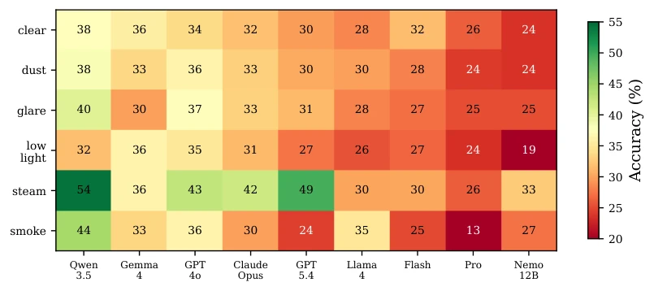
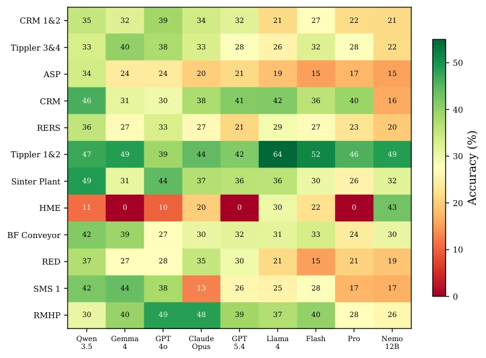
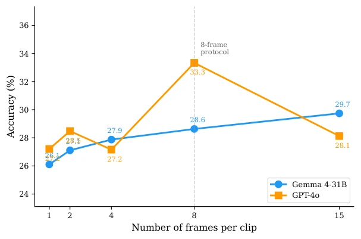

This paper delivers a cold shower to the industry while also providing a necessary sobering agent. SteelBench indeed fills the gap in real-world CCTV scenarios, yet the sharpest insight is not the dataset itself, but the "traceability audit protocol". It exposes how model-assisted labeling contaminates evaluation results—models from the same family can "cheat" and achieve a 17% boost on labels generated by themselves. Unfortunately, the dataset originates from only one steel plant, raising doubts about cross-facility generalization. Furthermore, 8-frame sampling discards temporal information, which is a significant drawback for long-range reasoning tasks. Do not be misled by the 42.6% accuracy; this actually delivers a cold shower to VLM deployment in the industry, proving that current models are far from "safe", the sim-to-real gap is wider than anticipated, and simply chasing leaderboard scores is meaningless.
Existing video benchmarks such as Kinetics [1] and ActivityNet [2] mostly focus on clear close-range views, while industrial simulation datasets like IndustryEQA [6] are overly idealized. Real steel mill environments are filled with dust, steam, low light, and occlusion, with workers occupying only 80-200 pixels; existing evaluations fail to reflect real risks. More importantly, model-assisted labeling may introduce bias, leading to inflated evaluation results, where models from the same family exploit pre-filled labels to cheat. This study aims to construct a benchmark incorporating safety rule reasoning and audit the labeling process, ensuring evaluations reflect true capabilities rather than data contamination, filling the gap in VLM evaluation under industrial monitoring scenarios, and providing a credible basis for the deployment of embodied intelligence in hazardous environments.

Figure 1: An illustration of SteelBench data representing real industrial surveillance conditions, with workers appearing as distant figures amid dust, steam, low light, and glare, while multiple simul- taneous activities unfold across the scene, each with corresponding annotation labels. SteelBench incorporates a 2-Layer Schema (≤5 persons for Layer-2 & > 5 persons for Layer-1) for annotations with per-worker labels across 25 action classes, PPE assessment, visibility tags, spatial context, and safety compliance, up to 58 labels per clip.
The overall workflow encompasses data construction and an audit protocol. Data originates from 149 hours of real CCTV, processed through four stages: VLM pre-filling, human correction, expert verification, and safety officer ruling, generating 1345 densely labeled segments. The innovation lies in the "traceability-aware audit protocol": Level 1 quantifies the VLM's impact on labeling (e.g., harmful anchoring); Level 2 compares model performance under different Ground Truth (GT) sources (blind, chain, VLM source) to isolate labeling bias; Level 3 establishes a human reference benchmark. The dataset adopts a double-layer Schema, with Layer-2 targeting single individuals and Layer-1 targeting scenes, covering 25 action classes and PPE states to ensure fine-grained diagnosis. Additionally, evaluation metrics introduce nAUDC to measure robustness under visibility degradation, CRG to isolate perception and reasoning errors, and DRS to aggregate five diagnostic checks, comprehensively evaluating deployment risks and ensuring traceability at every stage.

Figure 2: SteelBench data distributions. (a) Action class distribution. The long tail reflects genuine operations. Dashed line marks n=15 threshold. (b) Worker count per clip with Layer 1/2 boundary. (c) Visibility conditions (multi-label). (d) Clips across 16 zones.

Figure 3: Provenance-aware audit protocol for model-assisted benchmark construction. The three lev- els measure label influence, metric sensitivity to GT provenance, and human reference performance.

Figure 7: Direction analysis by annotation field (2,829 comparisons across 177 proper-chain clips). Harmful anchoring ranges from 0% (harness) to 9.0% (worker count), following a gradient of visual verifiability at 7–10m camera distance.
Nine VLMs were tested, including GPT-4o and Qwen3.5-122B, with metrics including accuracy, nAUDC (robustness), CRG (reasoning gap), ECE (calibration), and DRS (deployment readiness). Results show the best model achieved only 42.6% accuracy, far below the human benchmark of 84.6%. A key finding is that even when action recognition is correct, 37-58% of cases still result in safety judgment errors. Ablation studies indicate that increasing frame count cannot bridge the human-machine gap, suggesting a perception bottleneck rather than context limitations. Different models exhibited fragmented performance in robustness and calibration; no model passed all diagnostic checks. Furthermore, IndustryEQA simulation scores were inflated, confirming the necessity of real-environment evaluation and revealing the capability boundaries of current VLMs in complex industrial scenarios.

Figure 4: Per-class accuracy (%) across 25 action classes and 9 models. Action groups separated by white dividers: A Locomotion (A1–A5), B Stationary Work (B1–B9), C Crane & Equipment (C1–C4), D Material Handling (D1–D3), E Social (E1–E2), F Idle (F1–F2). Groups C and D remain difficult despite adequate support. Classes with n < 15 (C4, D3) are shown but excluded from per-class claims. B1 is brighter because multiple models default to it when uncertain.

Figure 6: Protocol sensitivity analysis. (a) Prompt variants on a 150-clip stratified subset. (b) Frame- density analysis for GPT-4o and Gemma 4. (c) DRS threshold margins showing the gap between the best model value and each diagnostic threshold. Red bars indicate failing checks. Blue bars indicate passing checks.

Figure 8: Per-annotator direction analysis on action classification. Blue segments are productive outcomes (VLM helped or the annotator corrected). Red and orange segments are harmful outcomes. Grey indicates cases where Both VLM and the annotator were wrong with different errors. CLR is the correct-label rate (productive anchor + productive override). These are action-level comparisons on the expert-overlapping subset and differ in denominator from the aggregate field-level CLR of 92.8% reported in Section 5.1.
其他图片Other Figures

Figure 9: accuracy (%) by visibility condition across 9 models. Steam and smoke (bottom rows) degrade all models, but the magnitude varies substantially by architecture — Gemma 4 maintains the most consistent performance while GPT-5.4 shows the sharpest drops.

Figure 10: Per-site accuracy (%) across 12 plant zones and 9 models. Site difficulty is the dominant source of variance (35.9pp spread), exceeding visibility conditions (8.4pp) and worker count (9.4pp).

Figure 11: Accuracy by frame count (150 stratified clips). Gemma 4 improves gradually from 1 to 15 frames (+3.6pp total). GPT-4o peaks at 8 frames and declines at 15, suggesting context-length or attention degradation with many images. The dashed line marks the 8-frame protocol used in the main evaluation.